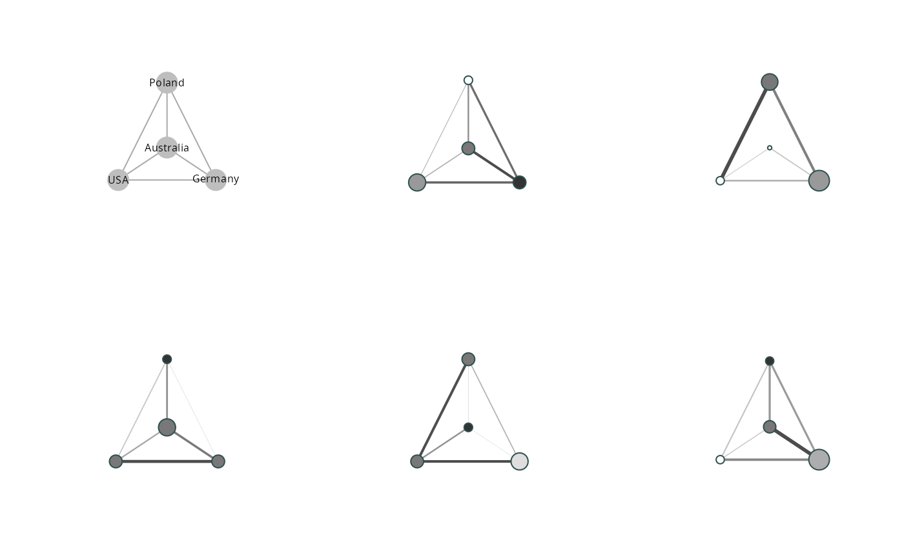

The idea of clustered graphs is to reduce the complexity of an ego-centered network
graph by visualizing alters in clusters defined by a categorical variable (Lerner et al. 2008).
clustered_graphs() calculates group sizes, inter and intra group tie
densities and returns these informations in a list of igraph objects.
clustered_graphs(object, ..., clust.groups) # S3 method for list clustered_graphs(object, aaties, clust.groups, ...) # S3 method for egor clustered_graphs(object, clust.groups, ...) # S3 method for data.frame clustered_graphs(object, aaties, clust.groups, egoID = ".egoID", ...)
| object | An |
|---|---|
| ... | arguments to be passed to methods |
| clust.groups | A |
| aaties |
|
| egoID |
|
clustered_graphs returns a list of graph objects representing
the clustered ego-centered network data;
Brandes, U., Lerner, J., Lubbers, M. J., McCarty, C., & Molina, J. L. (2008). Visual Statistics for Collections of Clustered Graphs. 2008 IEEE Pacific Visualization Symposium, 47-54.
vis_clustered_graphs for visualizing clustered graphs
data("egor32") # Simplify networks to clustered graphs, stored as igraph objects graphs <- clustered_graphs(egor32, "country") # Visualise par(mfrow = c(2,3)) vis_clustered_graphs( graphs[1:5] )